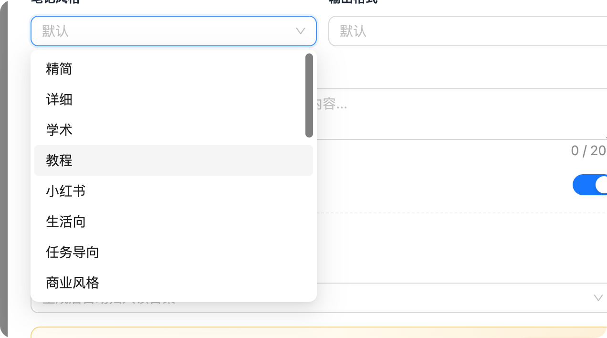
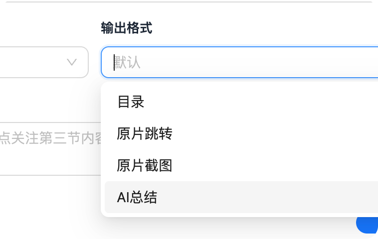
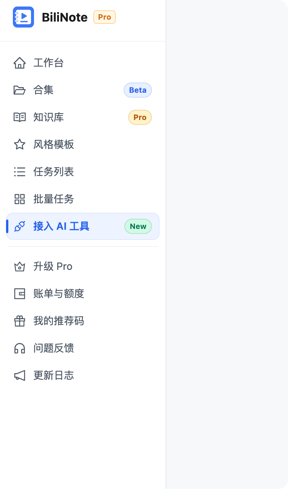

Nibi 差异化优势：这里是可编辑 Markdown，不是只读总结。用户可以边看视频、边改笔记、边引用字幕。
学完你将掌握
- 了解视频笔记工具的核心能力：转录、总结、时间戳跳转和导出。
- 掌握本地部署和在线版的差异，知道何时选择哪条路线。
- 能把原文对照、关键步骤和常见坑整理成可复用教程。
前置条件 / 所需工具
- 一段可公开访问的视频链接或本地视频文件。
- 可用的文本模型和音频转写能力。
Research prototype · 2026-06-19
BiliNote 的优势是从链接识别到结果页的链路非常清楚；Nibi 的优势是 NoteShell 可以继续编辑、对照视频和字幕打磨笔记。 这份原型不是复制竞品，而是把“立即预览、简洁状态、版本导出、原文对照、合集语义”整理成 Claude 可执行的视觉目标。
截图已复制到稳定目录：docs/design/assets/bilinote-video-note/。Claude 不需要访问 PixPin 临时目录。



BiliNote 的关键不是页面多，而是每一步只让用户做当下必要的决定。
粘贴 B站/YouTube 链接，立即开始探测平台、标题、封面、时长。
展示视频详情卡和“链接有效”，降低用户提交前的不确定感。
选择模型、风格、输出格式、补充说明、区分发言人、存入合集。
排队中、下载中、转录中、生成中、完成；技术细节不占主界面。
版本、导出、AI 工具、原文对照、目录集中在结果页。
这里不是要求照抄 BiliNote，而是标清 Claude 后续实现计划要覆盖的用户体验缺口。
| 环节 | BiliNote 观察 | Nibi 目标 |
|---|---|---|
| 信息架构 | 全局侧栏有工作台、合集、知识库、风格模板、任务列表、批量任务、接入 AI 工具。 | 用户可见层改成“合集/笔记”语言；workspace/item 继续作为内部模型。 |
| 新建笔记 | 链接输入后几秒出现视频详情卡，并把模型、风格、输出、归类放在同一弹窗。 | AddMaterialModal 改成三段式：视频源、生成设置、输出与归类。 |
| 处理中 | 页面中心只有视频卡、预计时间、五步进度和小提示。 | ProcessingPage 默认简洁，系统资源、日志、技术阶段折叠到高级详情。 |
| 结果页 | v1/v2 版本、导出、AI 工具、原文对照都在顶部和右侧。 | NoteShell 顶部补齐版本、导出、AI 工具，同时保留可编辑 Markdown 主优势。 |
| 原文对照 | 右侧抽屉显示“X 段 · 可跳原片”，有导出按钮和说话人模式。 | 复用 Nibi 字幕/音频 speaker 能力；按数据可用性展示原文、说话人、译文模式。 |
把当前“添加素材/任务/类型”的决策，改成用户更容易理解的三段式。
这一块是 BiliNote 最值得学的“即时反馈”。Nibi 已有 sniff-url 和 probe-duration，应该把结果可视化。
用户只是看到一个 URL 输入框，不确定平台是否支持、标题是否解析正确、任务提交后会不会失败。
这张卡应在粘贴链接后自动出现，不要等用户点击生成才给反馈。
默认展示给用户的是“我现在进行到哪了”，不是 worker、日志、资源指标。
6:04 · B站 · 已存入 AI 工具教程
预计还需 28 秒
正在把音频转成可引用的字幕段落...
目标不是变成 BiliNote 的只读页，而是把 BiliNote 的工具栏能力叠加到 Nibi 的可编辑 NoteShell 上。
前端 chunk 和导出文件看不到 BiliNote 内置完整 prompt；可复刻的是输出结构、长视频策略和后处理 contract。
导出的教程笔记稳定包含：学完掌握、前置条件、步骤、导出与交付、常见坑、验收方法。说明它不是普通摘要，而是按风格模板产出的教程 contract。
每个时间戳下有原始转写和清洗后的句子，能修正常见识别错误，如“调思号”变“调字号”。Nibi 可做“原文 / 清洗稿 / 说话人”三层。
PPT 是 12 页演示摘要；沉浸式 HTML 是重新组织后的网页读物，不是简单 Markdown 渲染。Nibi 后续可把它当成导出物，而非核心编辑源。
下面这段可以直接交给 Claude 继续做正式实现计划，或者拆成代码任务。
请基于这个 HTML 调研原型，继续写 Nibi 视频笔记体验改造计划： 1. 第一阶段只改 UI 语义、体验编排和现有能力入口，不做数据库大迁移。 2. 后端 workspace/item 暂不重命名，用户界面统一表达为“合集/笔记”。 3. 重点覆盖 AddMaterialModal、ProcessingPage、NoteShell： - 新建视频笔记弹窗：视频源 / 生成设置 / 输出与归类。 - 链接识别：几秒内显示平台、封面、标题、时长、链接有效。 - 处理中页：默认 5 步简洁进度，高级日志折叠。 - 结果页：版本下拉、导出分组、AI 工具、原文对照抽屉。 4. 保留 Nibi 差异化能力：Milkdown 可编辑、视频/字幕/笔记联动。 5. 区分发言人优先复用音频 diarization；没有 speaker 数据时不要显示说话人模式。 6. 风格模板优先做教程/精简/详细/任务导向/会议纪要，先定义输出 contract，再落代码。 7. 实现计划里要写清楚验收：打开 HTML 原型对照检查，新建笔记、处理中、结果页、导出、原文对照、合集语义都要覆盖。